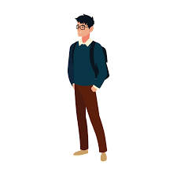

Introductory Blog Post
October 2, 2022 by Javon Peart

My name is Javon Peart, and I am a student pursuing a bachelor's degree in Computer Science with a minor in Spanish at the University of the West Indies. During my time in high school, I was required to write on literary novels and other media sources while adhering to specific writing styles.
Outside of my education endeavors, I find myself taking pleasure in playing the piano and writing poetry. Both of which allow me to express myself and emotions in a way that simple conversations are not able to, with the later of the two bearing the greatest applicability.
There is much to be said about the environment and the people who work together to produce high quality work. The report presented by ABC Nightline captured this idea in a remarkably refreshing way. Withing the walls of the IDEO company, there is a diverse family of persons that, sometimes, share no personal or educational background. This mixture of skills and wisdom appears to drive the business, rather than destroy it, as the perspectives that each person offers during times of product development wanes away from a hive-minded set of thoughts and leans towards an interactive session where each person's input is genuinely considered.